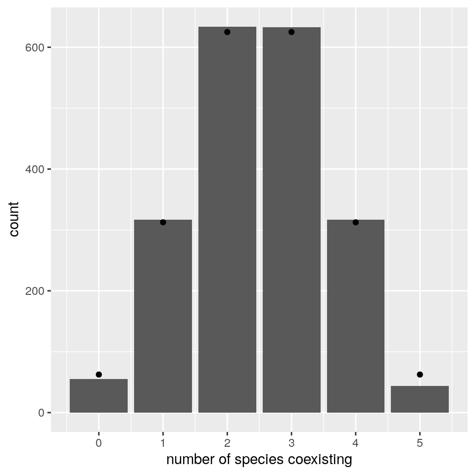

Lecture 2 Top-down assembly
To begin our explorations of assembly, we consider the case in which all species are introduced in the habitat at the same time, and at arbitrary initial densities.
Here we investigate the simplest case in which dynamics are given by the GLV model, \(A\) is symmetric and stable (and therefore Lyapunov Diagonally stable) matrix with random coefficients, and \(r\) is a vector of growth rates with random coefficients. For simplicity, we take the off-diagonal elements of \(A\) and the growth rates from a normal distribution centered at zero (the same would be found for any distribution symmetric about zero). This case was studied by Serván et al. (2018).
First, we are going to consider a trivial case, then simulate a more complex one, and finally outline the proof in Serván et al. (2018).
2.1 A trivial case
Suppose that the growth rates are drawn from a normal distribution centered at zero, and that the matrix \(A\) is diagonal and stable (i.e., species do not interact with each other; each species is self regulating). As such, a species will persist if and only if \(r_i > 0\). If we draw the growth rates from any distribution centered at zero, then the probability of having a positive growth rate is \(1/2\). Therefore, the number of coexisting species will follow the binomial distribution with parameters \(n\) and \(1/2\).
2.2 Simulating final composition
Now, let’s simulate cases in which species do interact with each other. First, we load the functions we’ve written before:
# this file contains functions to integrate GLV dynamics
# and plot the results
source("code/general_code.R")And then write functions to give us a (barely) stable, symmetric matrix \(A\), and random growth rates:
# function to build symmetric, Lyapunov Diagonally-stable matrix
build_LDstable <- function(n){
A <- matrix(0, n, n)
A[upper.tri(A)] <- rnorm(n * (n - 1) / 2)
# make symmetric
A <- A + t(A)
# now find the largest eigenvalue
l1A <- max(eigen(A, only.values = TRUE, symmetric = TRUE)$values)
if (l1A > 0){
# set the diagonal to make it stable
diag(A) <- diag(A) - l1A - 0.01
}
return(A)
}
# function to get random growth rates
build_randomr <- function(n){
return(rnorm(n))
}Now, we build a random system with seven species, and integrate the dynamics:
set.seed(5) # for reproducibility
n <- 7
A <- build_LDstable(n)
r <- build_randomr(n)
x0 <- runif(n)
out <- GLV_dynamics(z0 = x0, A = A, r = r, maxtime = 25, bytime = 0.1)
show(plot_dynamics(out))
| species | density |
|---|---|
| x1 | 0.4290121 |
| x2 | 0.2761340 |
| x3 | 0.0000000 |
| x4 | 0.4021960 |
| x5 | 0.0000000 |
| x6 | 0.6452999 |
| x7 | 0.5776737 |
As you can see, in this case, two species (3 and 5) go extinct, while the other ones reach a feasible equilibrium. Let’s try to start the system with species 3 and 5 at high abundance, to show that the equilibrium is indeed globally stable:
x0[3] <- 10
x0[5] <- 10
out <- GLV_dynamics(z0 = x0, A = A, r = r, maxtime = 25, bytime = 0.1)
show(plot_dynamics(out))
| species | density |
|---|---|
| x1 | 0.4291312 |
| x2 | 0.2759277 |
| x3 | 0.0000000 |
| x4 | 0.4020638 |
| x5 | 0.0000000 |
| x6 | 0.6454349 |
| x7 | 0.5777422 |
As you can see, the system still goes to the same equilibrium, with 3 and 5 extinct. Turns out, for this type of system, one does not even need to integrate dynamics: the Lemke–Howson algorithm can be adapted to solve the problem efficiently (Serván et al. 2018). I have coded up the algorithm already, and you can load the function get_final_composition(A, r) by typing:
[1] 0.4290300 0.2761030 0.0000000 0.4021761 0.0000000 0.6453202 0.5776840
2.3 A random zoo
In the case above, 5 species persisted. We can ask how many species will coexist in general under this parametrization. A good metaphor is that of the random zoo: take a large zoo, open all the cages, and return after fifty years. How many species will you find?
To simulate the random zoo, we take random matrices and random growth rates with \(n\) species, and tally the number of coexisting species over several simulations:
set.seed(1)
n <- 5
nsim <- 2000
results <- tibble(simulation = 1:nsim,
ncoexisting = rep(NA, nsim))
for (i in 1:nsim){
# build the matrix and vector
A <- build_LDstable(n)
r <- build_randomr(n)
xstar <- get_final_composition(A, r)
results$ncoexisting[i] <- sum(xstar > 0)
}
pl <- ggplot(data = results) +
aes(x = ncoexisting) +
geom_bar() +
scale_x_continuous("number of species coexisting", breaks = 0:10)
show(pl)
# add binomial distribution
tbinom <- data.frame(ncoexisting = 0:n,
expectation = nsim * dbinom(0:n, n, 0.5))
pl <- pl + geom_point(data = tbinom, aes(x = ncoexisting, y = expectation))
show(pl)
We find again that the number of coexisting species follows the binomial distribution with parameters \(n\) and \(1/2\) (i.e., exactly the same result found for non interacting species). To prove this fact, let’s begin with showing that the probability of having all species coexisting is \(1 / 2^n\). For this, we need \(x^\star = -r A^{-1}\) to be feasible. For each possible \(A\) (invertible) and \(r\), we have that the vector \(-r A^{-1}\) will display a certain pattern of signs. Proving that the probability that all \(n\) species coexist is \(1 / 2^n\) amounts to proving that all sign patterns are equally probable. To this end, define the matrix \(D_k = (-1)^{\delta_{ik}} \delta_{ij}\). This is like the identity matrix, but with element \(k\) of the diagonal set to \(-1\) instead of \(1\). We have that:
\[ (D_k A D_k) D_k x^\star = -D_k r \]
That is, by setting the \(k^\text{th}\) element of \(D_k\) to -1, we flip the sign of the \(k^\text{th}\) component of \(x^\star\). For example:
set.seed(2)
A <- build_LDstable(3)
r <- build_randomr(3)
# the equilibrium is not feasible
solve(A, -r)[1] -11.75292 26.47508 22.73981
# build matrix D_1
D_1 <- diag(c(-1, 1, 1))
# the multiplication changes the sign of a component of the solution
# making the equilibrium feasible
as.numeric(solve(D_1 %*% A %*% D_1, -D_1 %*% r))[1] 11.75292 26.47508 22.73981
Because of the symmetry assumption (i.e., we sampled all growth rates and off-diagonal elements from a distribution centered at zero), \((D_k A D_k)\) has the same distribution as \(A\), and \(D_k r\) the same distribution as \(r\). In fact, one can see that \((D_k A D_k)\) is also a similarity transformation, implying that the eigenvalues of \(A\) and \((D_k A D_k)\) are the same (i.e., the operation preserves stability):
[1] -0.010000 -1.601076 -3.665781
[1] -0.010000 -1.601076 -3.665781
We can repeat the operation several times, connecting each possible starting point to the feasible solution. Therefore, the probability of all species coexisting amounts to the probability of having chosen the “right” sequence of \(D_k\), which happens with probability \(1 / 2^n\). Notice that the same proof holds when the coefficients of \(A\) are sampled in pairs from a bivariate distribution (rather than having symmetric matrices), as long as the distribution is centered at zero, and the matrix is Lyapunov-Diagonally stable (Serván et al. (2018)). Using the same argument, one can prove that, under this parametrization, the probability of observing \(k\) species coexisting and \(n -k\) not being able to invade is exactly \(\binom{n}{k} \frac{1}{2^n}\) (Serván et al. (2018)).
2.4 Assembly and saturated equilibrium
Now let’s make it more complicated: we assemble an ecological community from the ground up. At each step, we introduce a species at low abundance, starting from an empty community. We then compute the new equilibrium, completing a step of the assembly:
assembly_one_step <- function(x, r, A){
n <- nrow(A)
invader <- sample(1:n, 1)
x[invader] <- 0.001 # introduce the invader at low abundance
present <- x > 0 # these are the species present now
# compute new equilibrium
y <- get_final_composition(A[present, present, drop = FALSE], r[present])
x[present] <- y
return(x)
}Now we can take a species pool along with their parameters, and try to assemble the system until we can no longer add any more species (i.e., until we reach a saturated equilibrium):
set.seed(7)
n <- 10
A <- build_LDstable(n)
r <- build_randomr(n)
# start with no species
x <- rep(0, n)
# assemble for 40 steps and keep track of richness and composition
ninvasions <- 40
results <- tibble(invasion = 1:ninvasions,
richness = rep(NA, ninvasions),
composition = rep(NA, ninvasions))
for (i in 1:ninvasions){
x <- assembly_one_step(x, r, A)
results$richness[i] <- sum(x > 0)
results$composition[i] <- paste((1:n)[x>0], collapse = "-")
}
knitr::kable(head(results))| invasion | richness | composition |
|---|---|---|
| 1 | 0 | |
| 2 | 0 | |
| 3 | 1 | 2 |
| 4 | 2 | 1-2 |
| 5 | 2 | 1-2 |
| 6 | 2 | 1-2 |
pl <- ggplot(results) + aes(x = invasion, y = richness, label = composition) +
geom_point() + geom_line() + geom_text(hjust = 0, nudge_y = 0.25, angle = 90)+
ylim(c(0, n * 1.25))
show(pl)
Now let’s roll back history and assemble again:
# start with no species
x <- rep(0, n)
# assemble for 40 steps and keep track of richness
ninvasions <- 40
results <- tibble(invasion = 1:ninvasions,
richness = rep(NA, ninvasions),
composition = rep(NA, ninvasions))
for (i in 1:ninvasions){
x <- assembly_one_step(x, r, A)
results$richness[i] <- sum(x > 0)
results$composition[i] <- paste((1:n)[x>0], collapse = "-")
}
knitr::kable(head(results))| invasion | richness | composition |
|---|---|---|
| 1 | 1 | 4 |
| 2 | 1 | 4 |
| 3 | 1 | 4 |
| 4 | 1 | 4 |
| 5 | 2 | 4-10 |
| 6 | 2 | 4-10 |
pl <- ggplot(results) + aes(x = invasion, y = richness, label = composition) +
geom_point() + geom_line() + geom_text(hjust = 0, nudge_y = 0.25, angle = 90)+
ylim(c(0, n * 1.25))
show(pl)
As you can see, despite taking a different assembly history, we reach the same final composition. In fact, this is exactly what we would expect if we were to throw all species in the environment at the same time:
[1] 1.7588344 2.5440743 0.0000000 0.7860178 1.8730535 2.5502055 0.6961259 [8] 1.6956878 0.0000000 0.0000000
[1] 1.7588344 2.5440743 0.0000000 0.7860178 1.8730535 2.5502055 0.6961259 [8] 1.6956878 0.0000000 0.0000000
As such, given enough time, any assembly history for a symmetric, stable matrix \(A\) will eventually reach the final composition represented by the saturated equilibrium (Serván, unpublished).
Interestingly, this is not the case when the matrix is not symmetric. Serván et al. (2018) conjectured however that the probability of finding a system whose final composition cannot be assembled one species at a time decreases rapidly with the size of the pool, as long as \(A\) is Lyapunov Diagonally stable.
References
Serván, Carlos A, José A Capitán, Jacopo Grilli, Kent E Morrison, and Stefano Allesina. 2018. “Coexistence of Many Species in Random Ecosystems.” Nature Ecology & Evolution 2 (8): 1237.